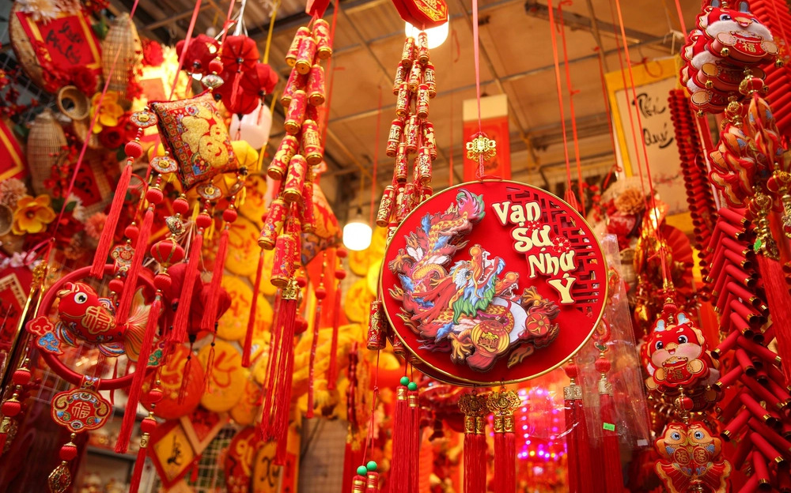

Tết Nguyên Đán (còn gọi là Tết Cả, Tết ta, Tết Âm lịch, Tết Cổ truyền hay đơn giản là Tết) là dịp lễ đầu năm Âm lịch và cũng là lễ hội quan trọng và lớn nhất và có ý nghĩa nhất ở Việt Nam. Lễ hội diễn ra vào ngày mùng 1 tháng Giêng âm lịch.
Theo nghiên cứu của nhà sử học Trần Văn Giáp, ngày "Tết Nguyên đán" ở Việt Nam đã có từ đầu thế kỷ thứ nhất sau Công nguyên. Nguồn gốc chữ Tết cũng như nghĩa chữ "Tết Nguyên đán" cũng được phổ biến từ thời đó.Còn theo sự tích "Bánh chưng, bánh dày", Tết Nguyên đán có thể đã xuất hiện từ thời các vua Hùng, với truyền thuyết về chàng Lang Liêu và bánh chưng
Chính vì mang tính chất sự khởi đầu của một giai đoạn gieo trồng mới, một tháng mới, mùa mới, năm mới, cho nên Tết có ý nghĩa rất lớn trong đời sống của người Việt.
Với mỗi người Việt, Tết là dịp tụ họp, đoàn viên gia đình. Con cháu đi làm ăn xa, dù bận đến mấy cũng cố gắng về ăn Tết với gia đình. Mọi người ai nấy đều cố hoàn thành công việc, giải quyết công nợ xong hết trước Tết, để có thể đón một năm mới thanh thản, an vui.
Nét đặc trưng trong văn hóa Tết Việt đó là bánh chưng và bánh tét : Bánh chưng (hình vuông) và bánh tét (hình trụ) là linh hồn của ẩm thực Tết Việt, gắn liền với sự tích Lang Liêu. Bánh tượng trưng cho lòng biết ơn trời đất, tổ tiên đã cho mưa thuận gió hòa, mùa màng bội thu
xét về tổng thể, phong tục của ngày Tết được chia làm ba khoảng thời gian, gồm: Tất niên, Giao thừa và Tân niên.
Mỗi khoảng thời gian ứng với những hoạt động như: Tống cựu nghinh tân; Đưa ông Táo về trời vào ngày 23 tháng Chạp; Gói bánh chưng, bánh tét; Chưng hoa ngày tết (đào, mai, quất…); Chưng mâm ngũ quả; Thăm viếng mộ tổ tiên, mời vong linh tổ tiên về ăn Tết với con cháu; Cúng giao thừa; Xông đất; Chúc tết và mừng tuổi ông bà, cha mẹ, họ hàng, bạn bè; Xuất hành đầu năm; Đi lễ chùa đầu năm; Hái lộc đầu xuân;…. Những phong tục mang tính linh thiêng đó đều nhằm cầu mong cho sự tốt lành, may mắn, thành công và sức khỏe trong năm mới.
Bên cạnh những phong tục linh thiêng ngày Tết, người Việt xưa còn ăn Tết, vui xuân bằng các hoạt động vui tươi, lành mạnh như: hội đánh vật, ném còn, chơi đu, bơi thuyền, chọi trâu, đua ngựa và các trò chơi dân gian khác…,